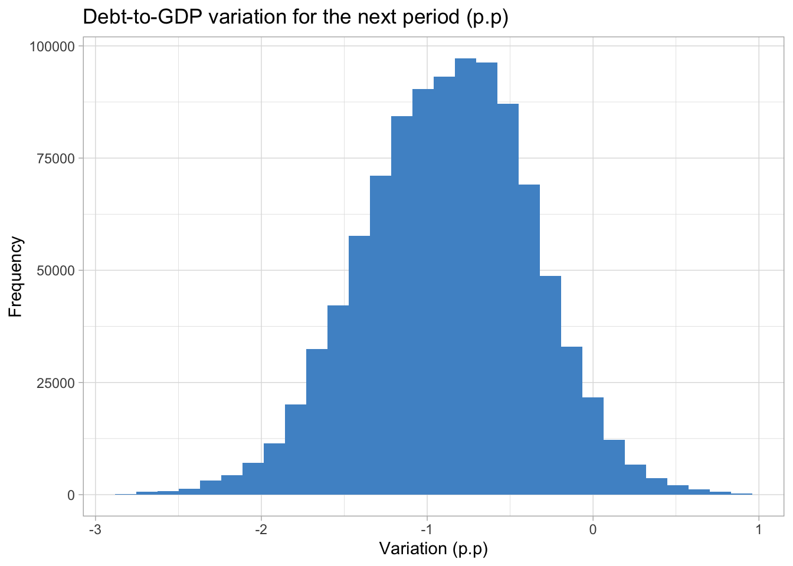

library(tidyverse)
library(sn)
set.seed(123)
sn_parameters <- map(
.x = list(
"CPI" = c(mean = 2.0, s.d. = 0.4, gamma = 0.8),
"GDP" = c(mean = 3.0, s.d. = 0.6, gamma = -0.8)
),
.f = cp2dp, family = 'sn'
)
# Number of simulations
n_sim <- 1000
variables_sim <- tibble(
CPI = rsn(n_sim, dp = sn_parameters[['CPI']]),
GDP = rsn(n_sim, dp = sn_parameters[['GDP']]),
IR = sample(c(3.0, 4.0), n_sim,
prob = c(0.40, 0.60),
replace = TRUE
)
)8 Simulations
Essential tools for modern economic analysis
We don’t always build new econometric or machine learning models to make predictions. More often than not, we have some equation with calibrated coefficients – from either the literature or a previously estimated model – that informs us how a variable of interest evolves. Using this information, we can make forecasts conditional on scenarios for the explanatory variables.
For example, suppose that it’s widely known that the PCI increases by around 0.5p.p for every 10% of exchange rate depreciation in a given country. In this case we can make predictions for the PCI based on what we expect for the exchange rate in different scenarios (all other things being equal): in scenario A, it increases by 5%; in scenario B, it decreases by 7%; and so on.
This approach is widely used and although very useful it has some limitations. The most important limitation is that it does not provide a complete distribution of predictions from which it would be possible to infer the correct uncertainty around the central value. The common practice is to set scenarios for both the upper and lower bounds and assume that all values fall within this range with the same probability.
However, in many situations we do have a grasp of the risks for each scenario: it’s more likely that the exchange rate shows a positive rather than a negative variation by the end of the year, for instance. Also, it may be that our prediction depends on the scenarios for more than one single variable. In that case, we also need to consider the interaction among the possible values for all the variables.
An elegant solution to deal with these issues is to generate distributions that reflect our scenario for each variable and then simulate a large number of joint scenarios for the outcome. To get a better sense of this idea, think about a common example from macroeconomics textbooks: the evolution of public debt. For the sake of simplicity, assume that the debt-to-GDP ratio evolves according to the following expression:
\[ \Delta b_{t+1} = (r_{t+1} - g_{t+1}) \times b_{t} - s_{t+1} \]
where \(b\) is the debt-to-GDP ratio; \(r\) is the real interest rate; \(g\) is the real GDP growth rate; and \(s\) is the government primary surplus as proportion of the GDP.
Now suppose the following assumptions for the variables on the RHS of the above equation: 1. CPI would be around the target at, say, 2% but with a higher probability of ending the year above rather than below the target; 2. The GDP is expected to grow 3%, but with downwards risks; 3. Interest rate will be raised either to 3% with a 40% chance or to 4% with a 60% chance; and primary surplus will be zero, with no uncertainty.
We’ll start by building skewed distributions for both CPI and GDP using the sn package. The first step is to supply the parameters of a Gaussian distribution – mean and standard deviation – plus a parameter gamma that controls the degree of skewness. Then we use the rsn function to sample random values from the distributions generated by these parameters. As for the interest rate variable, we can just use the sample function.
Defining the values of the gamma parameter is largely a matter of trial and error until we get the desired shape of the distribution. I somewhat exaggerated the parameter values to make the asymmetry of the distributions obvious. In addition, we must be cautious about the number of simulations since it’s very memory consuming. Below we can check visually the results.
variables_sim %>%
rowid_to_column(var = 'n') %>%
pivot_longer(-n, names_to = 'var', values_to = 'value') %>%
ggplot(aes(x = value)) +
geom_histogram(fill = "steelblue2", alpha = 0.8) +
theme_bw() +
scale_x_continuous(labels = function(x) paste0(x, '%')) +
facet_wrap(~ var, scales = 'free_y') +
labs(
title = 'Asymmetric Distributions',
x = "value",
y = "n"
)
Next we’ll use the cross function from the purrr package to create all the combinations of the three variables – our scenarios under the assumption that they are independent1.
scenarios_sim <- cross3(
.x = variables_sim$CPI,
.y = variables_sim$GDP,
.z = variables_sim$IR
)Finally, we compute the debt-to-GDP equation for each scenario assuming the initial debt-to-GDP is 60%.
debt2gdp_sim <- map_dbl(
.x = scenarios_sim,
.f = function(x){
x <- unlist(x)
CPI <- x[1]
GDP <- x[2]
IR <- x[3]
r <- IR - CPI
b0 <- 60.0
b1 <- (r - GDP)*(b0/100)
return(b1)
}
)
summary(debt2gdp_sim) Min. 1st Qu. Median Mean 3rd Qu. Max.
-2.7844 -1.2214 -0.8608 -0.8786 -0.5269 0.9323 We can check some interesting statistics about the resulting distribution with the summary function. In the most extreme scenarios the debt-to-GDP ratio would increase by summary(debt2gdp_sim)['Max.]p.p or decrease by summary(debt2gdp_sim)[Min.]p.p, while the expected scenario is a more modest drop around summary(debt2gdp_sim)['Median'] p.p. Also, at least 75% of the values in the distribution are negative.
Show the code
tibble(b1 = debt2gdp_sim) %>%
ggplot(aes(x = b1)) +
geom_histogram(fill = "steelblue3") +
labs(title = "Debt-to-GDP variation for the next period (p.p)",
y = "Frequency", x = "Variation (p.p)") +
theme(axis.text = element_text(size = 12),
title = element_text(size = 12)) +
theme_light()`stat_bin()` using `bins = 30`. Pick better value with `binwidth`.
It would be more realistic, for example, that the interest rate would assume the 4% value if inflation was above the target. We could create rules to account for this kind of dependency and use them to filter the
variables_simdata frame – taking care not to drastically distort the probabilities assigned to each variable at the start.↩︎